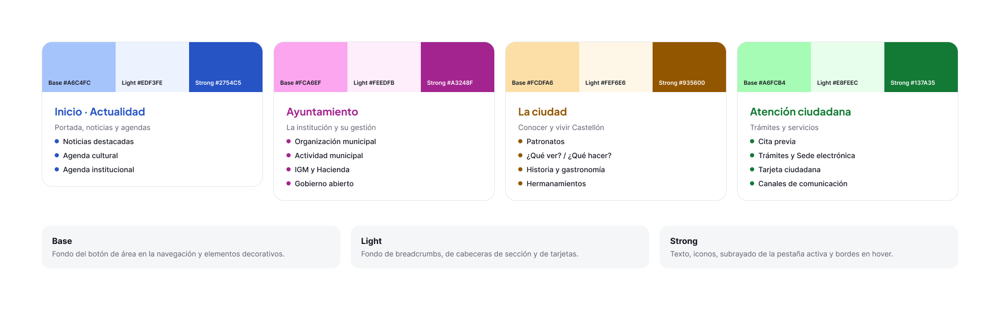
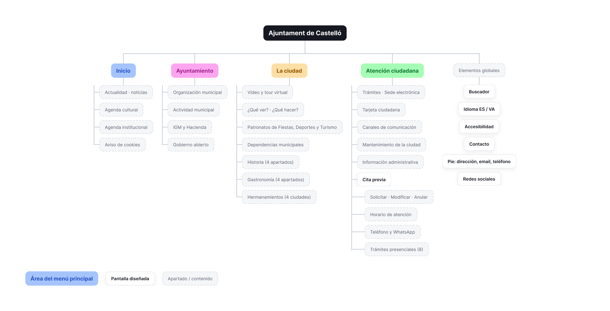
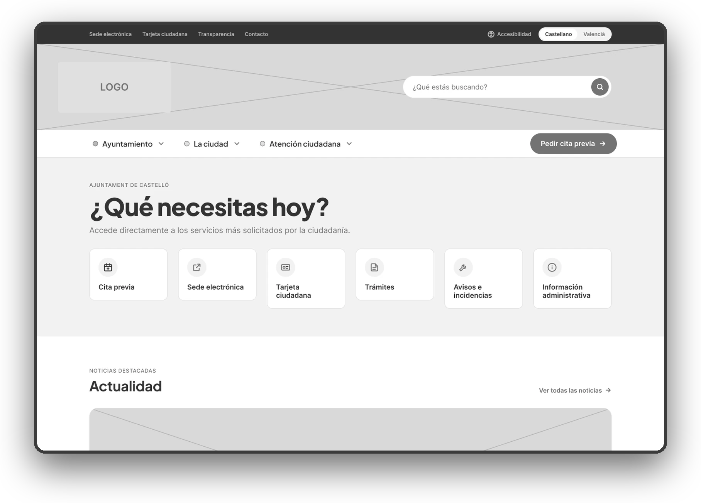
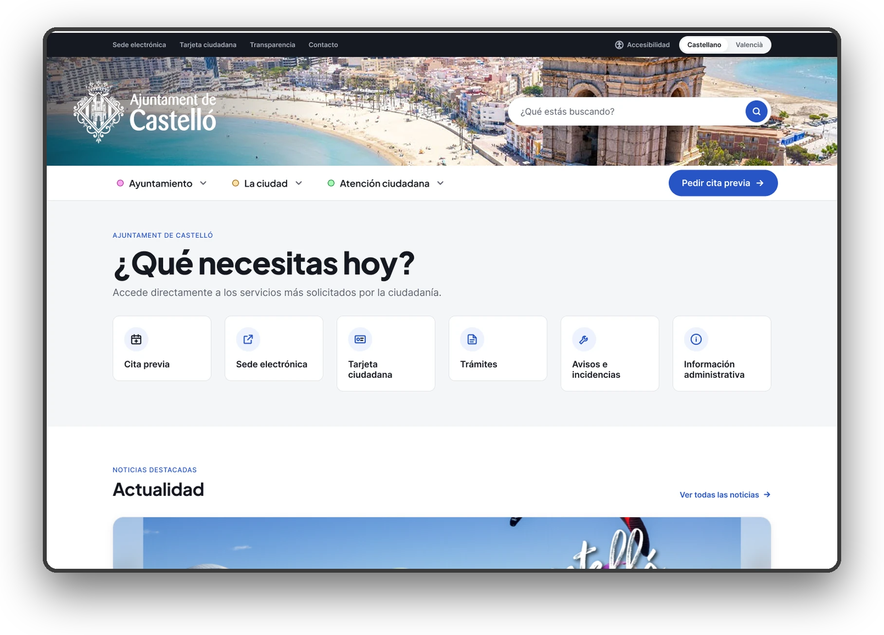
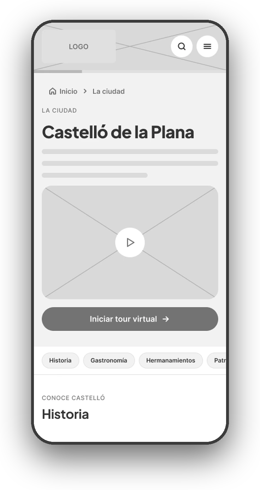
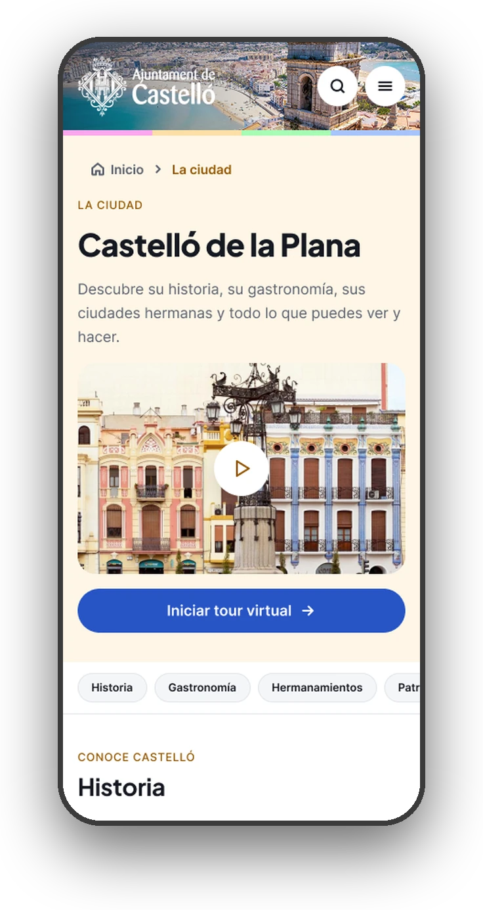

Proyecto 06 · Diseño UX/UI
Transformación digital de la plataforma institucional del Ayuntamiento de Castellón mediante un diseño Mobile-First que prioriza la accesibilidad y la experiencia ciudadana
La web del Ayuntamiento de Castellón requería una actualización integral para adaptarse a los estándares actuales de diseño y usabilidad. Como institución pública, necesitaba ofrecer numerosas funciones a todos los habitantes del municipio de forma intuitiva y accesible. El desafío consistía en equilibrar la densidad informativa propia de una web institucional con la simplicidad necesaria para que todo tipo de usuarios pudieran realizar sus trámites cómodamente.
Crear un diseño sencillo, intuitivo y atractivo que permita a todos los ciudadanos, independientemente de su nivel tecnológico, acceder fácilmente a los servicios municipales. El objetivo principal era transmitir un tono accesible mediante una paleta simple de 4 colores principales y una iconografía clara que mejore la navegación. Se buscaba aplicar un enfoque Mobile-First que priorice la experiencia en dispositivos móviles, garantizando accesibilidad y facilitando la gestión de trámites administrativos.
Ciudadanos de Castellón con perfiles muy diversos: desde personas mayores con manejo limitado de tecnología hasta usuarios con discapacidad visual, pasando por ciudadanos que buscan realizar trámites cotidianos. La diversidad del público objetivo demanda un diseño inclusivo que cumpla con estándares de accesibilidad y ofrezca una experiencia consistente entre plataformas web y móvil.
El proceso comenzó con un benchmarking exhaustivo de 5 sitios web gubernamentales de referencia: Ayuntamiento de Cádiz (España), GSA - General Services Administration (Estados Unidos), Norwich City Council (Reino Unido), Norway Gateway to Digital Public Services (Noruega), y Dubai Municipality (Emiratos Árabes Unidos). Los criterios de análisis incluyeron estructura de la información, diseño mobile-first, atractivo visual y nivel de accesibilidad. Esta investigación permitió identificar patrones efectivos como menús en cascada, uso del color para delimitar funciones, iconografía intuitiva y cabeceras atractivas con elementos institucionales.
La paleta de color se simplificó a 4 colores principales, cada uno asignado a una sección del sitio web para facilitar la navegación. Se incorporaron menús en cascada que distribuyen la información eficazmente con un funcionamiento intuitivo. Los iconos son grandes y representan claramente la acción que llevan a cabo, mejorando la cohesión del contenido. Se diseñó una cabecera con el escudo y nombre del ayuntamiento junto con fotografía de la ciudad, comunicando claramente el propósito institucional. Se implementaron enlaces rápidos mediante botones iconográficos, banner de avisos con delay, modal de cookies configurable, y retículas de 4 y 12 columnas con espaciado de 20px. Los estilos de tipografía se redujeron a 4: 2 para cabeceras y 2 para cuerpos de texto e iconos.
El mayor desafío fue encontrar el equilibrio entre estética moderna y accesibilidad para un público muy diverso. Adaptar el diseño para que ambas versiones (móvil y escritorio) muestren un enfoque mobile-first requirió múltiples iteraciones. La selección de una paleta de color válida para delimitar secciones manteniendo un estilo actual demandó varias pruebas hasta lograr un resultado satisfactorio. Garantizar que la iconografía sea precisa y comprensible para la mayoría del público, manteniendo cohesión con el estilo general, requirió especial atención. Finalmente, priorizar la experiencia del usuario en todas las decisiones de diseño cuando se trabaja con instituciones públicas supuso un reto de gestión de requisitos institucionales vs. necesidades ciudadanas.
Antes de rediseñar las pantallas, se reorganizó la web en una portada y tres grandes áreas: Ayuntamiento, La ciudad y Atención ciudadana. Cada una con su propio color para que el ciudadano sepa siempre en qué sección está.
Los cuatro colores originales se conservaron y se ampliaron con un tono claro y otro intenso para garantizar el contraste. El mapa del sitio ordena todo el contenido en un máximo de tres niveles, y sobre él se trazaron los flujos de las tareas más habituales: pedir cita previa, saber si un trámite necesita cita, descubrir la ciudad, contactar con el Ayuntamiento y consultar la actividad municipal.
Después, los wireframes de baja fidelidad fijaron la jerarquía de cada página, y un design system con variables y componentes con variantes dio forma a la alta fidelidad y a los prototipos interactivos en escritorio y móvil.






Mapa del sitio con la portada y tres áreas (Ayuntamiento, La ciudad y Atención ciudadana) en un máximo de tres niveles, con un color propio por área que orienta al ciudadano.
Flujos de las cinco tareas más habituales: pedir cita previa, saber si un trámite necesita cita, descubrir la ciudad, contactar y consultar la actividad municipal, con sus puntos de decisión.
Wireframes de baja fidelidad para fijar la jerarquía y prototipos interactivos en escritorio y móvil: menús desplegables, carrusel de noticias, aviso de cookies...
Variables de color por área, radio y espaciado además de estilos tipográficos y componentes con variantes en Figma.
Siguiente proyecto
Manual de Taller Honda Digital